Roll Camera! is a co-operative dice placement game about making a successful movie, but you have to do it on a budget and a tight schedule.
When we got involved in consulting Malachi Ray Rempen of Keen Bean Studio on the graphic design for Roll Camera! he had everything pretty much laid out in terms of design, but wanted help figuring out what was good and what could be improved, and how. After taking a close look at the game, we sent a whole heap of feedback and suggestions. Here’s what he did with it:
The board is central to Roll Camera! and it has a number of different functions. Some that Malachi only changed slightly based on our feedback and some he changed more.
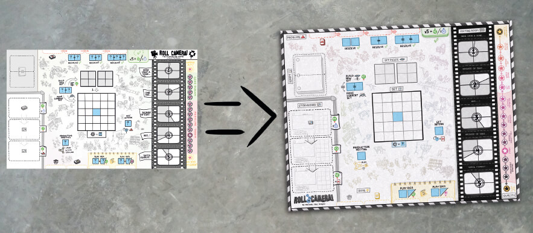The greatest changes he made were on the quality track. First of all, the text direction was reversed so the quality is increasing to the right when viewed so the text is upright, while still increasing upwards on the board. He also made it clearer which spots on the quality track equates to a victory both by making the background by the failing spots different from the others, and by making the spots themselves a darker purple the worse the score gets. The two extreme positions on the quality track (So bad it’s great! and Cinematic Masterpiece!) were made to stand out more, with a greater contrast to the background, because these are both what you should be aiming for (Yes, you can actually win by getting the lowest quality, but just one quality up and you lose!).
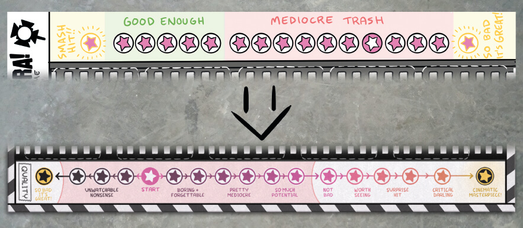The script cards come in two halves, the top half and the bottom half. When put together they look like a closed script. In order to help with setup, Malachi updated the script card spaces on the board to look like the cards that go on top.
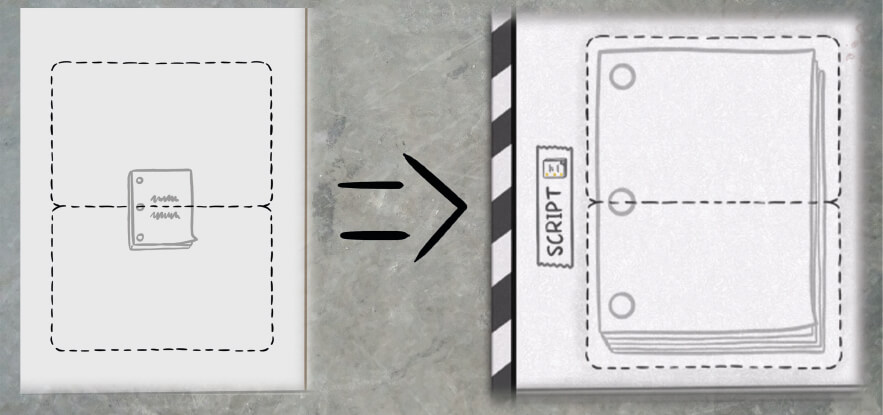The card spaces on the storyboard were also changed to look like the cards that are placed there.
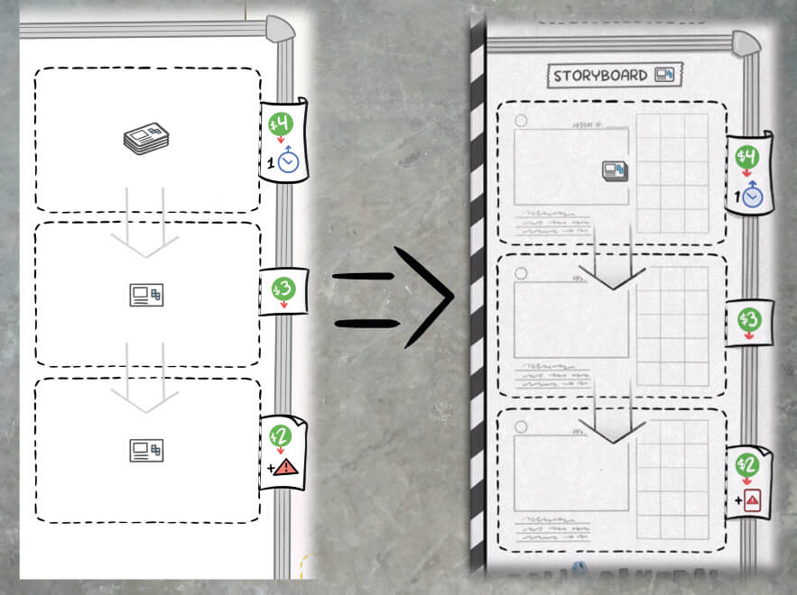Malachi updated some of the action reminders based on our suggestions.
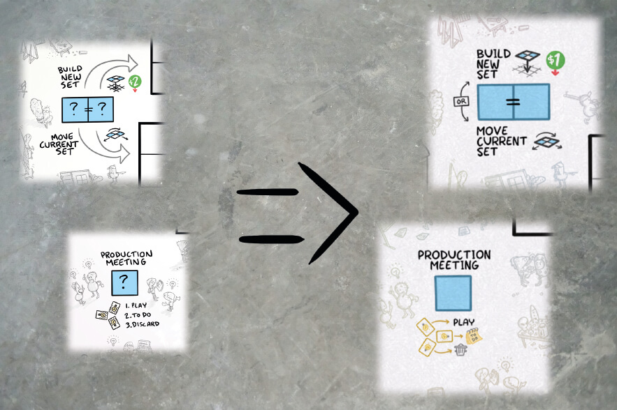Each player has a player board. Malachi didn’t change them that much because there wasn’t that much that needed changing.
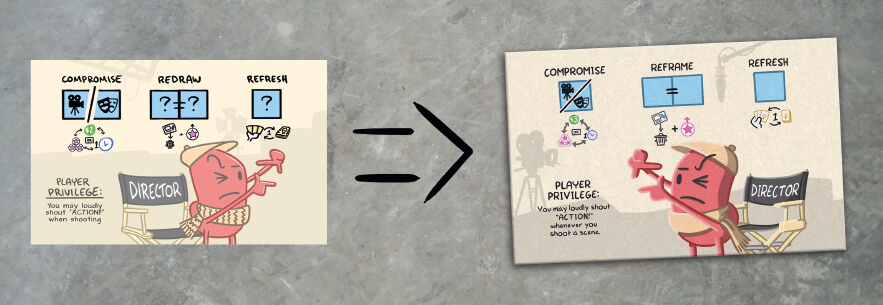The player boards, as well as the game board, have blue die spaces where the blue dice are placed to take actions. The one change that was made to the player boards was to make the either/or die spaces take up the same amount of space as the regular spaces, to make it clearer that only one die needs to be placed there.
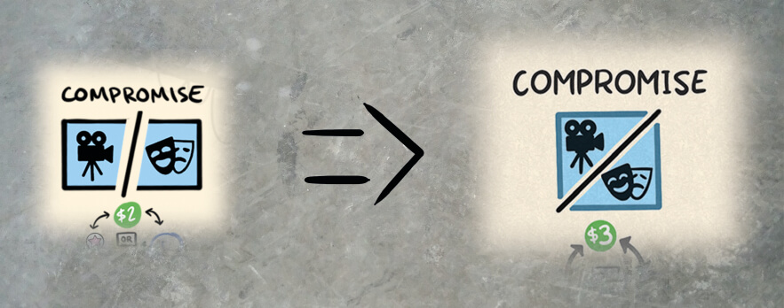The shot cards are found on the storyboard and need to be shot, by building its pattern on the set, to be moved to the editing room. The biggest change Malachi made based on our feedback was adding the grid behind the die pattern to make it easier to see where the dice need to be placed to fulfill a shot. This also opened up the possibility to use patterns where the dice are not right next to each other.
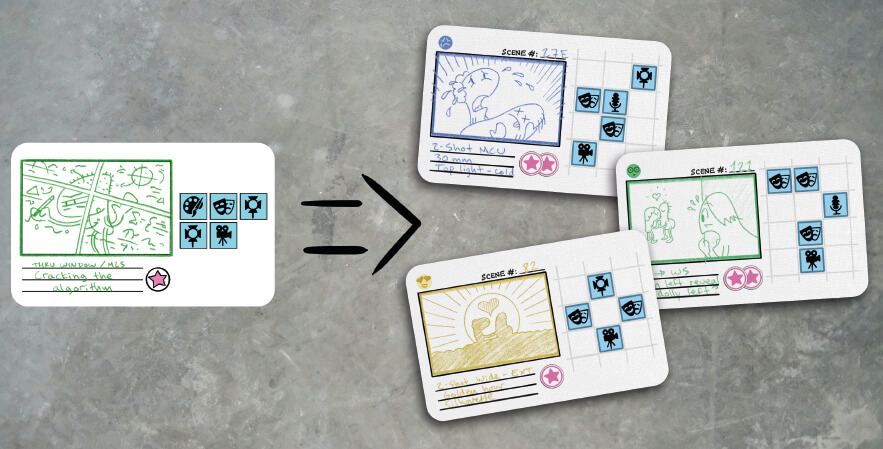To accomodate people with color blindness we suggested adding a non-color differentiator to the shot cards. These faces Malachi came up with work great.
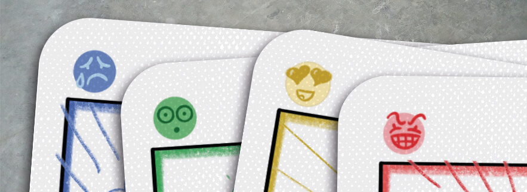The Idea cards are the only ones held in a player’s hand, and you only ever hold three at a time. They can have various effects on all different parts of the game.
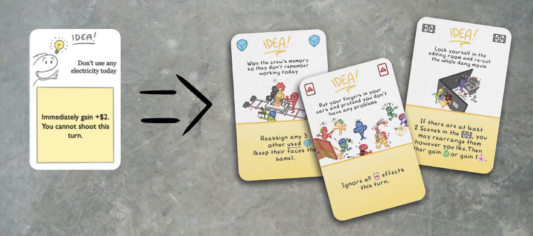To make the cards easier to survey in hand we suggested Malachi add icons in both upper corners based on what the card affects.
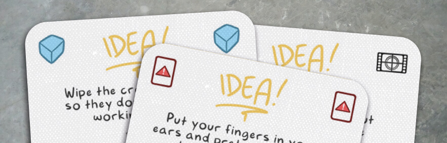We also suggested to use icons inline with the text, instead of spelling it out. This was mostly because the icons were already used on boards while their names weren’t, but also because icons make the card text more scannable.
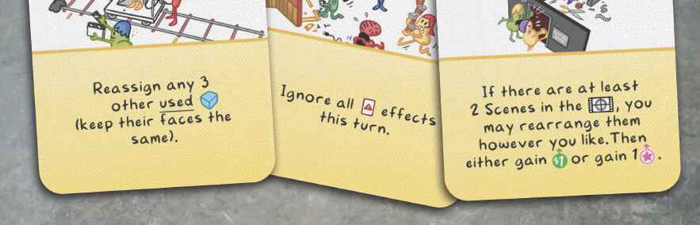